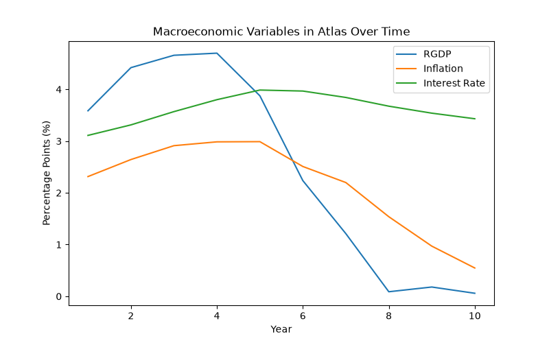

Atlas generates analytical data to evaluate how firms perform over time. The simulation tracks financial performance, market competition and consumer behaviour across multiple simulated years.
Displays how the different macroeconomic variables change over time, the RGDP line clearly represents the natural cyclical flow characteristic which acts as a primary element of realism within the simulator. Additionally, the inflation and interest rate lines too follow realistic fluctuations that we would see in a real world economy such as the UK. Business elements provided within the other graphs may be effectively compared to this diagram to understand the way firms are impacted by the macroeconomy.

Tracks how each firm's profitability changes throughout the simulation. This allows comparison of different business strategies and responses to market conditions.

Shows total revenue generated by each firm and highlights differences between market size, pricing strategy and sales volume.

Shows how production costs and strategic decisions influence firm profitability.

Illustrates how consumer preferences and firm decisions affect competition within the market.